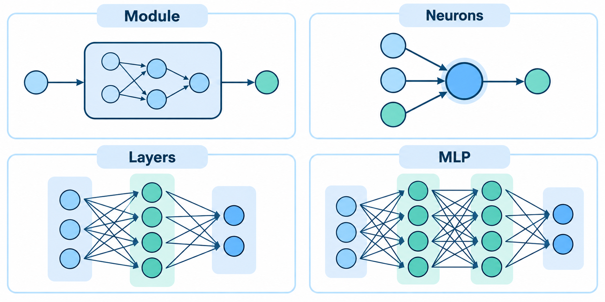

m = Module()
assert m.parameters() == []
m.zero_grad() # should run without error
print("Module test passed!")
Fall 2026
CSC-372 Project Part 6
Module, Neuron, Layer and Multilayer Perceptron (MLP)


In Project Part 5, we built an automatic differentiation engine. We now have the most important piece of our deep learning framework: an automatic differentiation engine. The next step is to build the layers and structure that will allow us to create and train neural networks efficiently.
We will start by defining a base class Module, which will serve as the parent class for all neural network components, including neurons, layers, and the multilayer perceptron itself. This class will provide a common interface for retrieving parameters and performing the forward pass.
Our Scalar class can construct computational graphs and automatically calculate gradients using:
loss.backward()But calculating gradients is only part of building a neural network. We also need a convenient way to organize the many parameters and computations that make up a model.
In this part, you will build a small neural network library on top of your autograd engine.
Just as our Scalar class is a simplified counterpart of PyTorch’s Tensor, the classes we build in this section will be simplified counterparts of classes in PyTorch’s torch.nn library.
By the end, you should be able to construct a multilayer perceptron using:
model = MLP(3, [4, 4, 1])and retrieve all of its trainable parameters using:
model.parameters()1. The Module Class
In PyTorch, neural network components inherit from nn.Module.
We will follow a similar design.
Create a base class called:
class Module:
...For now, Module needs to provide two important pieces of functionality.
parameters()
Implement a parameters() method that returns a list containing all trainable Scalar objects belonging to the module.
The base Module itself has no parameters, so its implementation can simply return an empty list.
zero_grad()
Recall that our autograd engine accumulates gradients. Before performing a new backward pass during training, we therefore need to reset the gradients of all model parameters.
Implement:
zero_grad()which should iterate through self.parameters() and set the gradient of every parameter to 0.0.
2. Build a Neuron
A neuron is the fundamental computational unit of a neural network.
Suppose a neuron receives \(n\) input features:
\[x_1,x_2,\ldots,x_n\]
The neuron has one weight corresponding to each input:
\[w_1,w_2,\ldots,w_n\]
and a bias:
\[b\]
It first computes:
\[ z = \sum_{i=1}^{n} w_i x_i + b \]
or equivalently:
\[ z = w_1x_1+w_2x_2+\cdots+w_nx_n+b \]
The values \(w_i\) and \(b\) are the trainable parameters of the neuron.
Create a class called:
class Neuron(Module):
...2.1. Constructor
The constructor should accept:
Neuron(nin)where nin represents the number of inputs to the neuron.
For example:
n = Neuron(3)should create a neuron containing:
- 3 weights
- 1 bias
Each weight and bias must be a Scalar object so that our autograd engine can calculate gradients with respect to them.
Initialize the weights to small random values. The bias may initially be set to zero.
Store the weights in a list called w and the bias in b.
n = Neuron(3)
assert len(n.w) == 3
assert all(isinstance(w, Scalar) for w in n.w)
assert isinstance(n.b, Scalar)
print("Neuron initialization test passed!")2.2. Implement the Neuron’s Forward Pass
Next, make a Neuron callable by implementing:
__call__()The method should accept a list of inputs:
x = [x1, x2, ..., xn]and calculate:
\[ z = \sum_{i=1}^{n} w_i x_i + b \]
Because the weights, bias, and intermediate computations are Scalar objects, performing this calculation should automatically construct a computational graph.
For now, return \(z\) directly. We will add nonlinear activation functions separately.
For example:
n = Neuron(3)
x = [
Scalar(2.0),
Scalar(-1.0),
Scalar(3.0)
]
out = n(x)should produce a single Scalar.
n = Neuron(3)
n.w = [
Scalar(1.0),
Scalar(2.0),
Scalar(-1.0)
]
n.b = Scalar(3.0)
x = [
Scalar(2.0),
Scalar(-1.0),
Scalar(4.0)
]
out = n(x)
assert isinstance(out, Scalar)
assert out.data == -1.0
print("Neuron forward pass test passed!")The expected calculation is:
\[ z=(1)(2)+(2)(-1)+(-1)(4)+3=-1 \]
2.3. Return the Neuron’s Parameters
Implement the parameters() method for Neuron.
A neuron’s trainable parameters consist of all of its weights and its bias:
\[ w_1,w_2,\ldots,w_n,b \]
Therefore, a neuron with nin inputs should have:
\[nin+1\]
trainable parameters.
n = Neuron(3)
params = n.parameters()
assert len(params) == 4
assert all(isinstance(p, Scalar) for p in params)
print("Neuron parameters test passed!")
# You should now also be able to use the
# `zero_grad()` method inherited from `Module`:
for p in n.parameters():
p.grad = 5.0
n.zero_grad()
assert all(p.grad == 0.0 for p in n.parameters())
print("Neuron zero_grad test passed!")3. Build a Layer
A neural network layer consists of multiple neurons receiving the same inputs.
Create:
class Layer(Module):
...The constructor should accept:
Layer(nin, nout)where:
nin= number of inputs to each neuronnout= number of neurons in the layer
For example:
layer = Layer(3, 4)represents:
3 inputs → 4 neurons → 4 outputsCreate nout separate Neuron objects and store them in a list.
layer = Layer(3, 4)
assert len(layer.neurons) == 4
assert all(isinstance(n, Neuron) for n in layer.neurons)
for neuron in layer.neurons:
assert len(neuron.w) == 3
print("Layer initialization test passed!")3.1. Implement the Layer’s Forward Pass
Implement Layer.__call__().
Every neuron in the layer should receive the same input vector.
If:
x = [x1, x2, x3]then conceptually:
┌── Neuron 1 ──> output 1
│
[x1, x2, x3] ────├── Neuron 2 ──> output 2
│
├── Neuron 3 ──> output 3
│
└── Neuron 4 ──> output 4The layer should return the outputs produced by its neurons.
Therefore, a layer containing nout neurons should normally produce nout outputs.
layer = Layer(3, 4)
x = [
Scalar(1.0),
Scalar(2.0),
Scalar(3.0)
]
out = layer(x)
assert len(out) == 4
assert all(isinstance(v, Scalar) for v in out)
print("Layer forward pass test passed!")3.2. Return All Parameters of a Layer
A layer’s parameters consist of the parameters belonging to all of its neurons.
Implement:
Layer.parameters()so that it returns a single list containing every trainable parameter in the layer.
How many parameters should a Layer(3, 4) contain?
Each neuron has:
\[3+1=4\]
parameters.
There are 4 neurons, so:
\[4(4)=16\]
total trainable parameters.
layer = Layer(3, 4)
params = layer.parameters()
assert len(params) == 16
assert all(isinstance(p, Scalar) for p in params)
print("Layer parameters test passed!")4. Build a Multilayer Perceptron
We can now combine multiple layers to create a Multilayer Perceptron (MLP).
Create:
class MLP(Module):
...The constructor should accept:
MLP(nin, nouts)where:
ninis the number of input featuresnoutsis a list describing the number of neurons in each layer
For example:
model = MLP(3, [4, 4, 1])represents the architecture:
Input Layer 1 Layer 2 Layer 3
3 ───> 4 ───> 4 ───> 1In other words:
3 input features
↓
4 neurons
↓
4 neurons
↓
1 neuronConstruct the appropriate Layer objects and store them inside the MLP.
Be careful about the dimensions. The output size of one layer becomes the input size of the next layer.
model = MLP(3, [4, 4, 1])
assert len(model.layers) == 3
assert len(model.layers[0].neurons) == 4
assert len(model.layers[1].neurons) == 4
assert len(model.layers[2].neurons) == 1
assert len(model.layers[0].neurons[0].w) == 3
assert len(model.layers[1].neurons[0].w) == 4
assert len(model.layers[2].neurons[0].w) == 4
print("MLP architecture test passed!")4.1. Implement the MLP Forward Pass
Implement MLP.__call__().
The input should first be passed through the first layer. The output of that layer should then become the input to the second layer, and so on.
Conceptually:
x → Layer 1 → Layer 2 → ... → Layer N → outputFor:
model = MLP(3, [4, 4, 1])the shapes should progress as:
3 → 4 → 4 → 1model = MLP(3, [4, 4, 1])
x = [
Scalar(2.0),
Scalar(3.0),
Scalar(-1.0)
]
out = model(x)
assert isinstance(out, Scalar)
print("MLP forward pass test passed!")4.2. Return All Parameters of the MLP
Finally, implement:
MLP.parameters()It should return all parameters from all layers as a single list.
For:
model = MLP(3, [4, 4, 1])we can calculate the expected number of parameters.
The first layer has:
\[4(3+1)=16\]
The second layer has:
\[4(4+1)=20\]
The final layer has:
\[1(4+1)=5\]
Therefore, the entire network has:
\[16+20+5=41\]
trainable parameters.
model = MLP(3, [4, 4, 1])
params = model.parameters()
assert len(params) == 41
assert all(isinstance(p, Scalar) for p in params)
print("MLP parameters test passed!")4.3. Final Checkpoint: Connect the Neural Network to Autograd
The neural network library you just created should work directly with the autograd engine from Parts 1–3.
model = MLP(3, [4, 4, 1])
x = [
Scalar(2.0),
Scalar(3.0),
Scalar(-1.0)
]
prediction = model(x)
target = Scalar(1.0)
loss = (prediction - target) ** 2
model.zero_grad()
loss.backward()
# After calling `backward()`, every parameter in the
# network should have a gradient.
assert len(model.parameters()) == 41
for p in model.parameters():
assert isinstance(p.grad, (int, float))
print("Neural network + autograd test passed!")At this point, you have built the essential pieces of a small deep learning framework:
Scalar
↓
Automatic Differentiation
↓
Module
↓
Neuron
↓
Layer
↓
MLPYour Scalar objects play the role of PyTorch tensors, while Module, Neuron, Layer, and MLP provide abstractions for organizing those values into trainable neural networks.
There is now only one major piece missing: training the network.
We have parameters, predictions, a loss, and gradients. Next, we need to use those gradients to update the parameters and make the loss smaller.
5. Training the Neural Network
We now have all the major components of a small deep learning framework.
Our Scalar class provides automatic differentiation, and our neural network library allows us to construct models containing trainable parameters.
Now we will put everything together and actually train a neural network.
The basic training process should look familiar from PyTorch:
Forward Pass
↓
Compute Loss
↓
Zero Gradients
↓
Backward Pass
↓
Update Parameters
↓
RepeatThe remarkable thing is that this time you implemented every major component yourself.
5.1. Create a Dataset
We will begin with a small binary classification dataset.
Each example contains three input features:
xs = [
[2.0, 3.0, -1.0],
[3.0, -1.0, 0.5],
[0.5, 1.0, 1.0],
[1.0, 1.0, -1.0],
]with corresponding target values:
ys = [1.0, -1.0, -1.0, 1.0]Because our final neuron uses tanh, its predictions will fall between approximately \(-1\) and \(1\), making these convenient target values.
5.2. Create the Model
Create an MLP with:
- 3 input features
- two hidden layers containing 4 neurons each
- 1 output neuron
model = MLP(3, [4, 4, 1])assert len(model.layers) == 3
assert len(model.parameters()) == 41
print("Model created successfully!")
print("Number of parameters:", len(model.parameters()))Before training, try running one example through the network:
prediction = model(xs[0])
print("Prediction:", prediction)
print("Target:", ys[0])At this point, the prediction will essentially be random because the model’s parameters were randomly initialized.
5.3. Forward Pass
Run every training example through the model:
ypred = [model(x) for x in xs]You should receive one prediction for each training example.
assert len(ypred) == len(xs)
assert all(isinstance(y, Scalar) for y in ypred)
print("Forward pass test passed!")5.5. Calculate the Loss
We need a way to measure how different the model’s predictions are from the desired targets.
For this assignment, use mean squared error.
For one prediction:
\[ L_i=(\hat{y}_i-y_i)^2 \]
For the entire dataset:
\[ L = \frac{1}{N} \sum_{i=1}^{N} (\hat{y}_i-y_i)^2 \]
Use your Scalar operations to calculate this loss.
For example, you might first calculate the individual losses:
losses = [(yout - ygt) ** 2
for ygt, yout in zip(ys, ypred)]and then combine them into the final loss.
Checkpoint
assert isinstance(loss, Scalar)
assert loss.data >= 0
print("Initial loss:", loss.data)Remember this value. If training is working correctly, the loss should become smaller.
5.6. Zero the Gradients
Before calculating new gradients, reset the gradients of all model parameters:
model.zero_grad()Why is this necessary?
Recall that our autograd engine uses:
+=when propagating gradients.
This is intentional because the same parameter may influence the loss through many different paths.
However, it also means gradients from a previous training iteration would remain unless we explicitly reset them.
This is analogous to calling:
optimizer.zero_grad()in PyTorch.
5.7. Backward Pass
Now calculate the gradient of the loss with respect to every parameter in the network:
loss.backward()Because the entire forward pass was performed using Scalar objects, the loss is connected through the computational graph to every weight and bias that contributed to the predictions.
Inspect a few parameters:
for p in model.parameters()[:5]:
print("value:", p.data, "gradient:", p.grad)You should see gradients that are generally nonzero.
At this point, each parameter knows:
\[ \frac{\partial L}{\partial p} \]
which tells us how changing that parameter would affect the loss.
5.8. Update the Parameters
Now perform one step of gradient descent.
For each parameter \(p\):
\[ p \leftarrow p-\alpha\frac{\partial L}{\partial p} \]
where \(\alpha\) is the learning rate.
Choose a learning rate such as:
learning_rate = 0.05Then update every parameter using its gradient.
for p in model.parameters():
# Update p.data using p.grad
...Do not create new Scalar objects during the update. Modify the numerical data stored by each existing parameter.
Verify that at least one parameter changes:
before = [p.data for p in model.parameters()]
for p in model.parameters():
p.data += -learning_rate * p.grad
after = [p.data for p in model.parameters()]
assert before != after
print("Parameter update test passed!")5.9. Build the Training Loop
You have now completed one iteration of gradient descent.
Training simply means repeating this process many times:
1. Forward pass
2. Calculate loss
3. Zero gradients
4. Backward pass
5. Update parameters
6. RepeatCombine these steps into a training loop.
For example:
for epoch in range(...):
# 1. Forward pass
...
# 2. Calculate loss
...
# 3. Zero gradients
...
# 4. Backward pass
...
# 5. Update parameters
...
# 6. Display progress
...Print the loss periodically so you can observe whether the model is learning.
You should see something resembling:
Epoch 0 | Loss: ...
Epoch 10 | Loss: ...
Epoch 20 | Loss: ...
...If your implementation is correct, the loss should generally decrease during training.
5.10. Evaluate the Trained Model
After training, calculate the model’s predictions again:
ypred = [model(x) for x in xs]Display each prediction alongside its target.
For example:
Prediction Target
-----------------------
... 1
... -1
... -1
... 1Since this is a binary classification problem, use the sign of the prediction to determine the predicted class:
\[ \hat{c} = \begin{cases} 1 & \hat{y} > 0 \\ -1 & \hat{y} < 0 \end{cases} \]
for x, y in zip(xs, ys):
prediction = model(x)
predicted_class = 1 if prediction.data > 0 else -1
print(
"prediction:",
round(prediction.data, 3),
"class:",
predicted_class,
"target:",
y
)Your trained model should correctly classify most or all of the four training examples.
Final Reflection
You have now built and trained a neural network without using PyTorch’s autograd or neural network libraries.
Compare the system you created with the PyTorch workflow:
| Your Micrograd | PyTorch |
|---|---|
Scalar |
Tensor |
Scalar.backward() |
Tensor.backward() |
Module |
nn.Module |
Neuron / Layer / MLP |
nn layers and models |
model.parameters() |
model.parameters() |
model.zero_grad() |
optimizer.zero_grad() |
| Manual parameter update | optimizer.step() |
Despite the enormous difference in scale and performance, the fundamental training process is the same:
\[ \text{data} \rightarrow \text{model} \rightarrow \text{predictions} \rightarrow \text{loss} \rightarrow \text{backpropagation} \rightarrow \text{gradients} \rightarrow \text{parameter updates} \]
The loss.backward() call that may have seemed like magic at the beginning of this course should now be much less mysterious.
You built it.